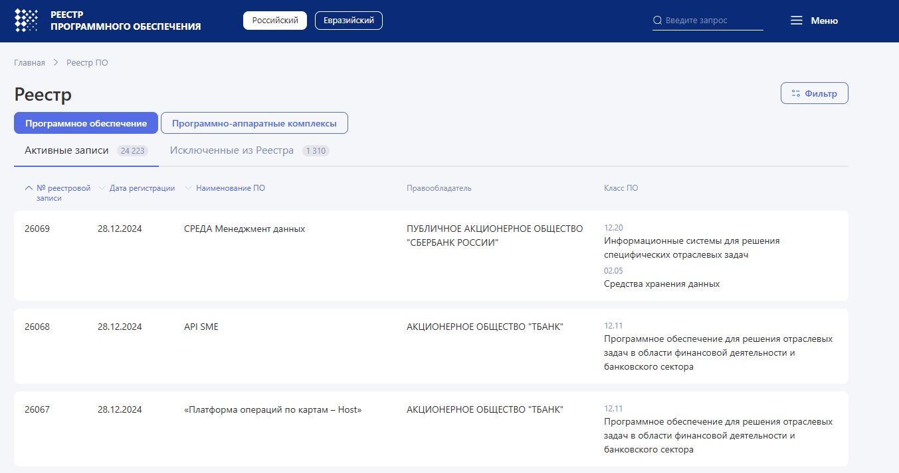
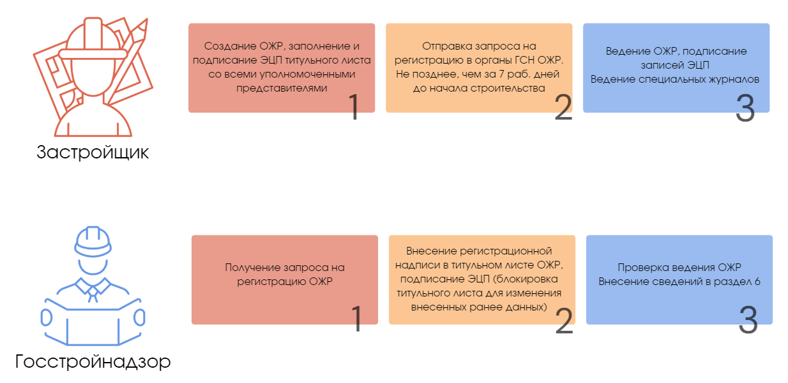

Процесс формирования и ведения цифровой исполнительной документации
На этом уроке мы подробно продемонстрируем процесс формирования и ведения цифровой исполнительной документации. В завершение вы выполните интерактивные задания, а в следующих уроках изучите ведение цифровой исполнительной документации на примерах различных программных решений.
Процессы формирования и ведения ИД в электронном виде осуществляются посредством информационной системы электронной ИД которая должна быть включена в Единый реестр российских программ для электронных вычислительных машин и баз данных. Проверить интересующее ПО можно на сайте реестра.

Давайте представим, что ваша компания определилась с программным обеспечением для ведения ЦИД и вы уже готовы к дальнейшим действиям. Начнем с правил формирования и ведения журналов учета выполнения работ в цифровом виде.
Как формировать и вести журналы учета выполнения работ в цифровом виде
Условно работу по ведению журналов учета выполнения работ можно разделить на четыре этапа:
- Регистрация ЭОЖР и ЭСЖР в ГСН
- Ведение ЭОЖР и ЭСЖР, которое заключается в наполнении записями с подписанием ЭП уполномоченными представителями участников электронного взаимодействия в системе
- Уведомление ГСН посредством системы о факте внесения изменений в титульную часть ЭОЖР (при необходимости)
- Уведомление ГСН посредством системы об окончании ведения ЭОЖР и ЭСЖР и о завершении строительства ОКС

Как формировать и вести акты и другие документы ИД в цифровом виде
Условно работу по ведению актов и иных документов можно разделить на пять этапов:
- Заполняются на основании записей в ЭОЖР и ЭСЖР по факту выполнения СМР, проведения строительного контроля, испытаний строительных конструкций, инженерных систем и сетей.
- Формирование актов в виде электронных документов в системе осуществляет ЛОС, непосредственно выполнившее те или иные виды СМР (как правило, подрядчик или субподрядчик, являющийся участником электронного взаимодействия). Виды работ, отраженные в актах, должны соответствовать записям в ЭОЖР и ЭСЖР.
- По завершении формирования в системе актов с необходимыми приложениями к ним, ЛОС направляет участникам электронного взаимодействия уведомление о готовности проектов актов для проверки, а также о дате и времени проведения освидетельствования.
- По результатам проверки проектов ИД участники могут выразить свои замечания и предложения. Они формируются непосредственно в системе с подписанием ЭП либо загружаются в систему в виде электронного документа, подписанного ЭП, или в виде электронного образа документа. ЛОС должно исправить несоответствующие акты до фактического (полевого) освидетельствования или перенести дату освидетельствования.
- После фактического (полевого) освидетельствования при отсутствии несоответствий участники освидетельствования визируют собственной ЭП соответствующие акты в последовательности, установленной заказчиком (в течение одного рабочего дня от даты проведения фактического освидетельствования посредством системы или иными программными средствами с последующей загрузкой в систему файла открепленной подписи, или электронного документа с ЭП, или электронного образа документа).
Неподписанные ранее акты остаются в системе и после устранения всех несоответствий. На основании их формируют следующие версии актов. Указанный процесс повторяют до тех пор, пока работы не будут приняты и последние версии актов не будут подписаны ЭП всеми участниками электронного взаимодействия, принимающими участие в освидетельствовании
{kind=link}
{kind=link}